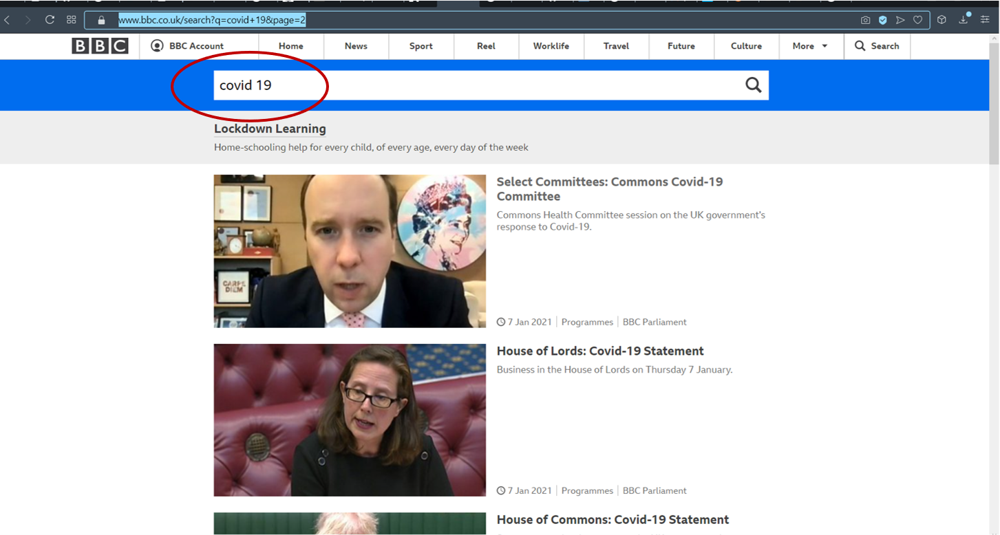
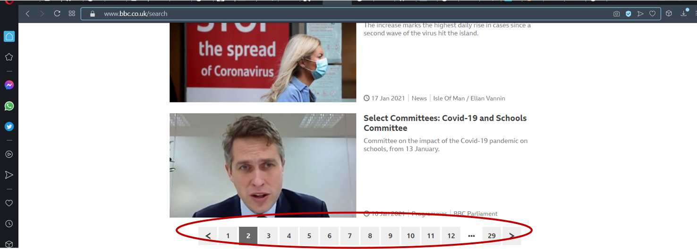
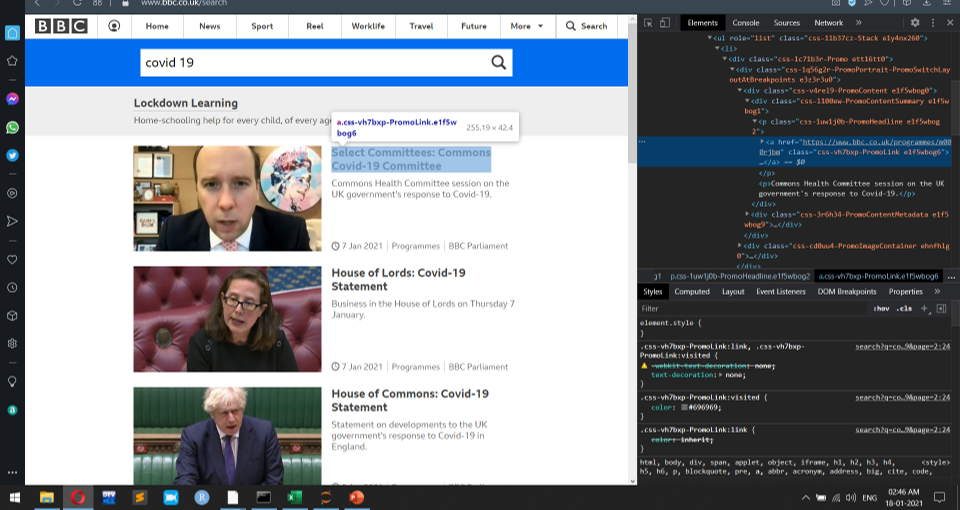
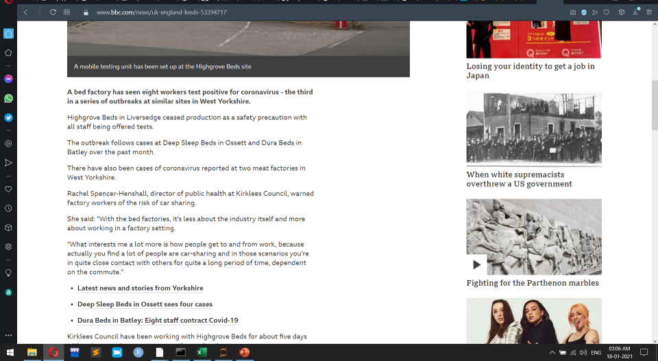

Newspaper scraping¶
Imposing structure on data¶
Web scraping focuses on the transformation of unstructured data on the web
Typically in html format, into structured data that can be stored
And analyzed in a central local database or spreadsheat

here we consider the UK BBC News website i.e https://www.bbc.co.uk/search?q=covid+19&page=1 and searched about covid 19 in a search box present on the top of the page shown in the picture.

Let we write the script to scrape the news by giving keywords in our python
Import the packages¶
here the the BBC news website had written using html scripts to extract the html scripts we have to install the BeautifulSoup and requests packages.
import urllib.request,sys,time
from bs4 import BeautifulSoup
import requests
import pandas as pd
pages to get¶
After searching of keywords the results shown in the number of pages

so we have to intialize the variable to request the particular page and the result of the searching will be stored in the dataframe.
pagesToGet= 1
resultframe=[]
get the keyword to search¶
key=input("Enter the query: ")
key=key.replace(' ','+')
print(key)
---------------------------------------------------------------------------
StdinNotImplementedError Traceback (most recent call last)
<ipython-input-3-2dae5981230d> in <module>
----> 1 key=input("Enter the query: ")
2 key=key.replace(' ','+')
3 print(key)
c:\programdata\anaconda3\envs\jbook\lib\site-packages\ipykernel\kernelbase.py in raw_input(self, prompt)
853 if not self._allow_stdin:
854 raise StdinNotImplementedError(
--> 855 "raw_input was called, but this frontend does not support input requests."
856 )
857 return self._input_request(str(prompt),
StdinNotImplementedError: raw_input was called, but this frontend does not support input requests.
Extracting html script¶
write the code to extract html script using class names mentioned in the bbc news website.

and the result stored in the csv file named ”search_res.csv”
for page in range(1,pagesToGet+1):
print('processing page :', page)
url = 'https://www.bbc.co.uk/search?q='+key+'+article&page='+str(page)
print(url)
page=requests.get(url)
soup=BeautifulSoup(page.text,'html.parser')
frame=[]
links=soup.find('ul',attrs={'class':'css-1lb37cz-Stack e1y4nx260'}).find_all('li')
#links=soup.find_all('li',attrs={'class':'o-listicle__item'})
print(len(links))
filename="search_res.csv"
f=open(filename,"w", encoding = 'utf-8')
headers="Statement,Link,Date\n"
f.write(headers)
for j in links:
Statement = j.find("div",attrs={'class':'css-l100ew-PromoContentSummary e1f5wbog1'}).find('p',attrs={'class':'css-1uw1j0b-PromoHeadline e1f5wbog2'}).find('a',attrs={'class':'css-vh7bxp-PromoLink e1f5wbog6'}).text.strip()
Link = j.find("p",attrs={'class':'css-1uw1j0b-PromoHeadline e1f5wbog2'}).find('a')['href'].strip()
Date = j.find('span',attrs={'class':'css-1hizfh0-MetadataSnippet ecn1o5v0'}).text[8:].strip()
frame.append((Statement,Link,Date))
f.write(Statement.replace(",","^")+","+Link+","+Date.replace(",","^")+"\n")
resultframe.extend(frame)
f.close()
processing page : 1
https://www.bbc.co.uk/search?q=covid+19+article&page=1
10
Result csv file¶
here in a page there are 10 links are displayed. The title of the news related to keyword and published url and published date are stored in the csv file.
data=pd.DataFrame(resultframe, columns=['Statement','Link','Date'])
print(data)
Statement \
0 BBC Inside Science: Coronavirus conspiracy, Li...
1 Covid: Biden vows 100m vaccinations for US in ...
2 Coronavirus: Third West Yorkshire bed factory ...
3 US election 2020: Biden takes Georgia to solid...
4 Coronavirus in Sudan exposes new leaders
5 BCG: Can a vaccine from 1921 save lives from C...
6 Shoprite: Africa's biggest supermarket conside...
7 Coronavirus in Africa: 'Signs of hope' as case...
8 Coronavirus: Calls to protect 'vital' warehous...
9 Letter from Africa: Spare a thought for strand...
Link Date
0 https://www.bbc.co.uk/programmes/m000k325 18 Jun 2020
1 https://www.bbc.co.uk/news/world-us-canada-552... 9 Dec 2020
2 https://www.bbc.co.uk/news/uk-england-leeds-53... 13 Jul 2020
3 https://www.bbc.co.uk/news/election-us-2020-54... 14 Nov 2020
4 https://www.bbc.co.uk/news/world-africa-52735520 25 May 2020
5 https://www.bbc.co.uk/news/health-54465733 11 Oct 2020
6 https://www.bbc.co.uk/news/world-africa-53637506 3 Aug 2020
7 https://www.bbc.co.uk/news/world-africa-53847699 20 Aug 2020
8 https://www.bbc.co.uk/news/uk-england-south-yo... 2 Apr 2020
9 https://www.bbc.co.uk/news/world-africa-52645702 17 May 2020
using Article package¶
using the article package, we can display the various properties of news article like title of the news, summary of the news, meta description etc., we can take the link of the above result i.e data DataFrame.
data['Link']
0 https://www.bbc.co.uk/programmes/m000k325
1 https://www.bbc.co.uk/news/world-us-canada-552...
2 https://www.bbc.co.uk/news/uk-england-leeds-53...
3 https://www.bbc.co.uk/news/election-us-2020-54...
4 https://www.bbc.co.uk/news/world-africa-52735520
5 https://www.bbc.co.uk/news/health-54465733
6 https://www.bbc.co.uk/news/world-africa-53637506
7 https://www.bbc.co.uk/news/world-africa-53847699
8 https://www.bbc.co.uk/news/uk-england-south-yo...
9 https://www.bbc.co.uk/news/world-africa-52645702
Name: Link, dtype: object
installing the package¶
!pip install newspaper3k
Collecting newspaper3k
Using cached newspaper3k-0.2.8-py3-none-any.whl (211 kB)
Requirement already satisfied: cssselect>=0.9.2 in c:\users\mohanapriya\anaconda3\lib\site-packages (from newspaper3k) (1.1.0)
Collecting tldextract>=2.0.1
Using cached tldextract-3.1.0-py2.py3-none-any.whl (87 kB)
Requirement already satisfied: python-dateutil>=2.5.3 in c:\users\mohanapriya\anaconda3\lib\site-packages (from newspaper3k) (2.8.1)
Collecting jieba3k>=0.35.1
Using cached jieba3k-0.35.1.zip (7.4 MB)
Collecting tinysegmenter==0.3
Using cached tinysegmenter-0.3.tar.gz (16 kB)
Collecting feedparser>=5.2.1
Using cached feedparser-6.0.2-py3-none-any.whl (80 kB)
Requirement already satisfied: nltk>=3.2.1 in c:\users\mohanapriya\anaconda3\lib\site-packages (from newspaper3k) (3.5)
Requirement already satisfied: requests>=2.10.0 in c:\users\mohanapriya\anaconda3\lib\site-packages (from newspaper3k) (2.24.0)
Requirement already satisfied: Pillow>=3.3.0 in c:\users\mohanapriya\anaconda3\lib\site-packages (from newspaper3k) (7.2.0)
Requirement already satisfied: beautifulsoup4>=4.4.1 in c:\users\mohanapriya\anaconda3\lib\site-packages (from newspaper3k) (4.9.1)
Requirement already satisfied: lxml>=3.6.0 in c:\users\mohanapriya\anaconda3\lib\site-packages (from newspaper3k) (4.5.2)
Collecting feedfinder2>=0.0.4
Using cached feedfinder2-0.0.4.tar.gz (3.3 kB)
Requirement already satisfied: PyYAML>=3.11 in c:\users\mohanapriya\anaconda3\lib\site-packages (from newspaper3k) (5.3.1)
Requirement already satisfied: idna in c:\users\mohanapriya\anaconda3\lib\site-packages (from tldextract>=2.0.1->newspaper3k) (2.10)
Requirement already satisfied: filelock>=3.0.8 in c:\users\mohanapriya\anaconda3\lib\site-packages (from tldextract>=2.0.1->newspaper3k) (3.0.12)
Collecting requests-file>=1.4
Using cached requests_file-1.5.1-py2.py3-none-any.whl (3.7 kB)
Requirement already satisfied: six>=1.5 in c:\users\mohanapriya\anaconda3\lib\site-packages (from python-dateutil>=2.5.3->newspaper3k) (1.15.0)
Collecting sgmllib3k
Using cached sgmllib3k-1.0.0.tar.gz (5.8 kB)
Requirement already satisfied: regex in c:\users\mohanapriya\anaconda3\lib\site-packages (from nltk>=3.2.1->newspaper3k) (2020.6.8)
Requirement already satisfied: click in c:\users\mohanapriya\anaconda3\lib\site-packages (from nltk>=3.2.1->newspaper3k) (7.1.2)
Requirement already satisfied: tqdm in c:\users\mohanapriya\anaconda3\lib\site-packages (from nltk>=3.2.1->newspaper3k) (4.47.0)
Requirement already satisfied: joblib in c:\users\mohanapriya\anaconda3\lib\site-packages (from nltk>=3.2.1->newspaper3k) (0.16.0)
Requirement already satisfied: urllib3!=1.25.0,!=1.25.1,<1.26,>=1.21.1 in c:\users\mohanapriya\anaconda3\lib\site-packages (from requests>=2.10.0->newspaper3k) (1.25.9)
Requirement already satisfied: certifi>=2017.4.17 in c:\users\mohanapriya\anaconda3\lib\site-packages (from requests>=2.10.0->newspaper3k) (2020.6.20)
Requirement already satisfied: chardet<4,>=3.0.2 in c:\users\mohanapriya\anaconda3\lib\site-packages (from requests>=2.10.0->newspaper3k) (3.0.4)
Requirement already satisfied: soupsieve>1.2 in c:\users\mohanapriya\anaconda3\lib\site-packages (from beautifulsoup4>=4.4.1->newspaper3k) (2.0.1)
Building wheels for collected packages: jieba3k, tinysegmenter, feedfinder2, sgmllib3k
Building wheel for jieba3k (setup.py): started
Building wheel for jieba3k (setup.py): finished with status 'done'
Created wheel for jieba3k: filename=jieba3k-0.35.1-py3-none-any.whl size=7398410 sha256=711e29fc8afc715e0631851856f61038e6efdc8b2794938c73af5c0978d7c99e
Stored in directory: c:\users\mohanapriya\appdata\local\pip\cache\wheels\1f\7e\0c\54f3b0f5164278677899f2db08f2b07943ce2d024a3c862afb
Building wheel for tinysegmenter (setup.py): started
Building wheel for tinysegmenter (setup.py): finished with status 'done'
Created wheel for tinysegmenter: filename=tinysegmenter-0.3-py3-none-any.whl size=13542 sha256=791b1338eb28143a5445431beaf0f6019f4983196034b956178a7a6d70a03a5d
Stored in directory: c:\users\mohanapriya\appdata\local\pip\cache\wheels\99\74\83\8fac1c8d9c648cfabebbbffe97a889f6624817f3aa0bbe6c09
Building wheel for feedfinder2 (setup.py): started
Building wheel for feedfinder2 (setup.py): finished with status 'done'
Created wheel for feedfinder2: filename=feedfinder2-0.0.4-py3-none-any.whl size=3359 sha256=e2bb1d8c413f997bdec226e74b0c496b607f314331c5ca38636d42de4322ed36
Stored in directory: c:\users\mohanapriya\appdata\local\pip\cache\wheels\b6\09\68\a9f15498ac02c23dde29f18745bc6a6f574ba4ab41861a3575
Building wheel for sgmllib3k (setup.py): started
Building wheel for sgmllib3k (setup.py): finished with status 'done'
Created wheel for sgmllib3k: filename=sgmllib3k-1.0.0-py3-none-any.whl size=6071 sha256=96e616f95afb00829d458448de5bea3354e750eaea36a13afee97a0227eb9eb5
Stored in directory: c:\users\mohanapriya\appdata\local\pip\cache\wheels\83\63\2f\117884c3b19d46b64d3d61690333aa80c88dc14050e269c546
Successfully built jieba3k tinysegmenter feedfinder2 sgmllib3k
Installing collected packages: requests-file, tldextract, jieba3k, tinysegmenter, sgmllib3k, feedparser, feedfinder2, newspaper3k
Successfully installed feedfinder2-0.0.4 feedparser-6.0.2 jieba3k-0.35.1 newspaper3k-0.2.8 requests-file-1.5.1 sgmllib3k-1.0.0 tinysegmenter-0.3 tldextract-3.1.0
importing the package¶
from newspaper import Article
url = data['Link'][1] #for example take a first result link
apply parsing to know the properties of news article easily¶
res_article = Article(url, language="en") # en for English
res_article.download() #download an article
res_article.parse() #To parse the article
res_article.nlp() #To perform natural language processing ie..nlp
displaying the title of the news article¶
res_article.title
'Covid: Biden vows 100m vaccinations for US in first 100 days'
displaying the text of the news article¶
res_article.text
'"My first 100 days won\'t end the Covid-19 virus. I can\'t promise that. But we did not get into this mess quickly. We\'re not going to get out of it quickly," he said at the event in Delaware, giving few details of how the largest vaccination programme in US history would be carried out.'
using BeautifulSoup to extract entire article¶
url=data['Link'][2]
url
'https://www.bbc.co.uk/news/uk-england-leeds-53394717'

page=requests.get(url)
soup=BeautifulSoup(page.text,'html.parser')
frame=[]
links=soup.find('article',attrs={'class':'css-5h7eao-ArticleWrapper e1nh2i2l0'}).find_all('div',attrs={'class':'css-uf6wea-RichTextComponentWrapper e1xue1i83'})
#links=soup.find_all('li',attrs={'class':'o-listicle__item'})
#print("l:"+links)
for i in links:
news=i.find('div',attrs={'class':'css-83cqas-RichTextContainer e5tfeyi2'}).text
print(news)
A bed factory has seen eight workers test positive for coronavirus - the third in a series of outbreaks at similar sites in West Yorkshire.
Highgrove Beds in Liversedge ceased production as a safety precaution with all staff being offered tests.
The outbreak follows cases at Deep Sleep Beds in Ossett and Dura Beds in Batley over the past month.
There have also been cases of coronavirus reported at two meat factories in West Yorkshire.
Rachel Spencer-Henshall, director of public health at Kirklees Council, warned factory workers of the risk of car sharing.
She said: "With the bed factories, it's less about the industry itself and more about working in a factory setting.
"What interests me a lot more is how people get to and from work, because actually you find a lot of people are car-sharing and in those scenarios you're in quite close contact with others for quite a long period of time, dependent on the commute."
Latest news and stories from YorkshireDeep Sleep Beds in Ossett sees four casesDura Beds in Batley: Eight staff contract Covid-19
Kirklees Council have been working with Highgrove Beds for about five days with an increase in cases seen over the weekend.
The factory has been was inspected by Kirklees Council and "presented high standards of infection control procedures and practices".
In a joint statement, the company, the council and Public Health England said the risk to local residents from the outbreak was very low.
A SIMPLE GUIDE: How do I protect myself?IMPACT: What the virus does to the bodyRECOVERY: How long does it take?LOCKDOWN: How can we lift restrictions?ENDGAME: How do we get out of this mess?
Earlier this month, four workers at Deep Sleep Beds tested positive for Covid-19.
On 1 July, it was revealed that eight staff at Dura Beds had contracted the virus.
This comes as Forza Foods in Normanton reported 17 positive cases.
Last month it was confirmed that 165 staff working at the Kober factory in Cleckheaton had tested positive for the virus.
Why are there outbreaks in meat processing plants?Forza Foods open despite coronavirus cases'Secrecy' claims over Cleckheaton outbreak
Ms Spencer-Henshall said that certain industries have seen increases in cases including meat processing.
She added: "Those factory conditions can be really attractive to the virus, particularly being a cold environment and quite loud so people are having to communicate and shout.
"We all know that singing is frowned upon at the moment and it's a similar thing in terms of projecting the virus."
Follow BBC Yorkshire on Facebook, Twitter and Instagram. Send your story ideas to yorkslincs.news@bbc.co.uk or send video here.